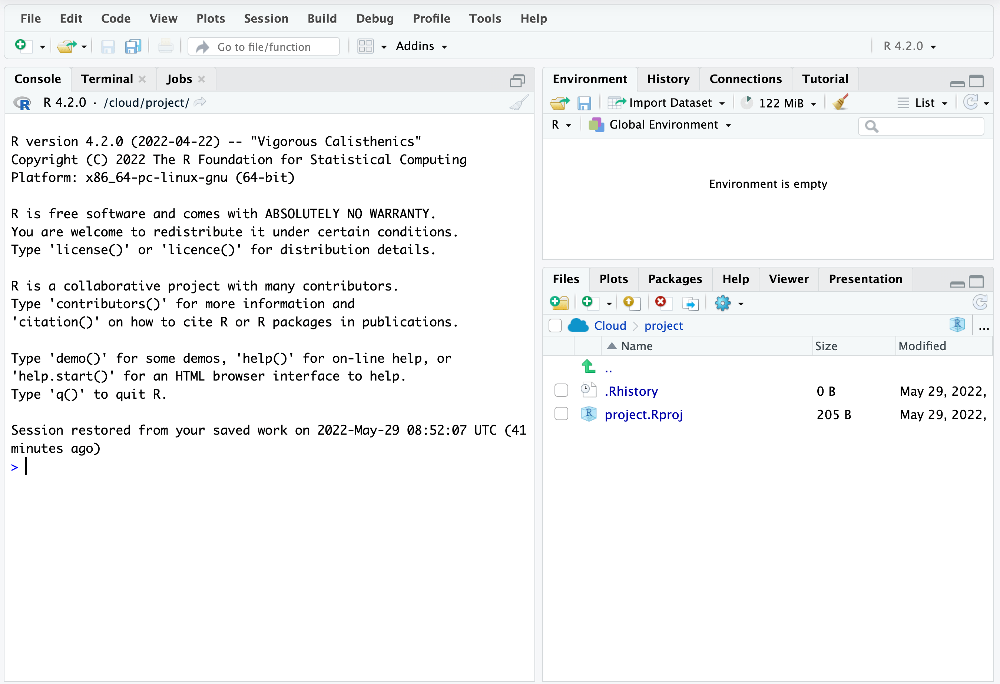
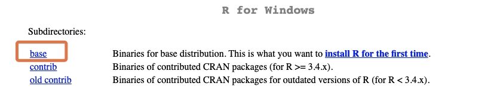
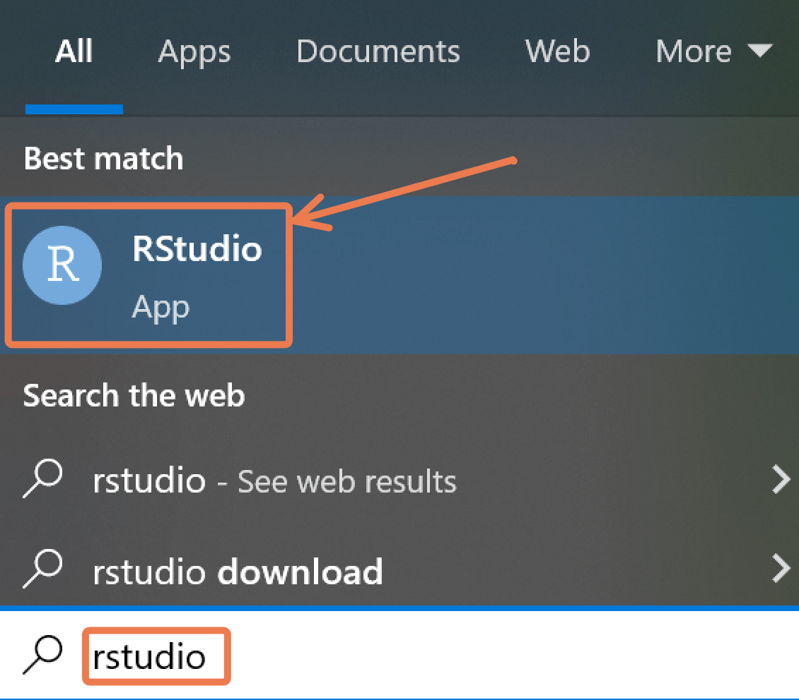
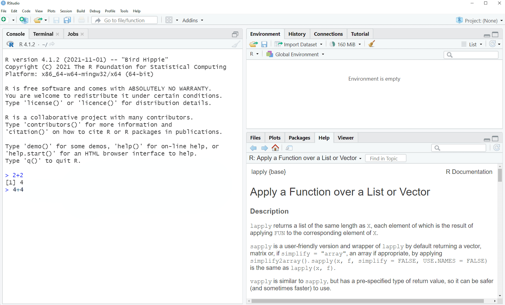
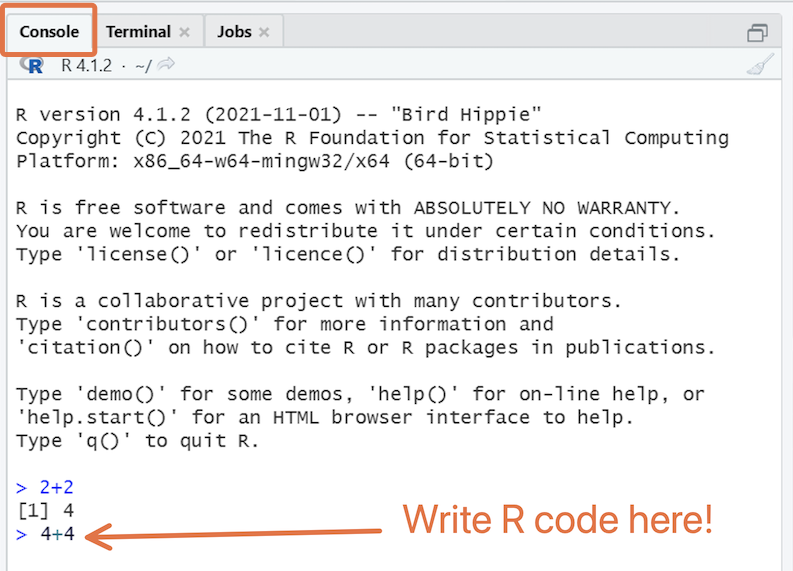
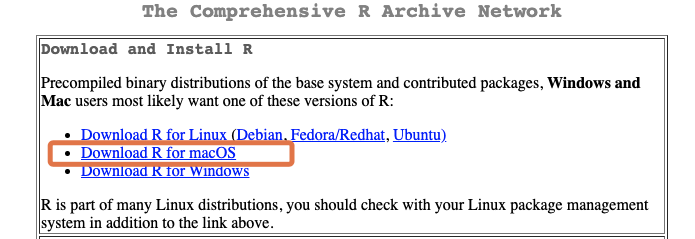
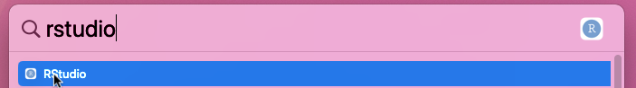
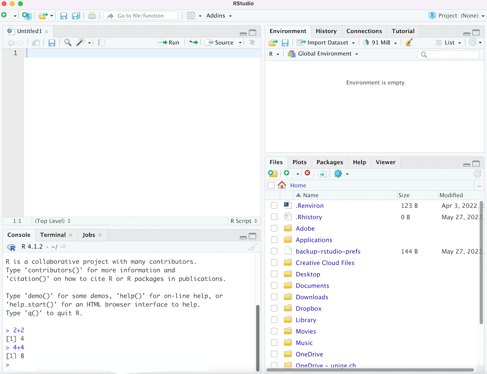
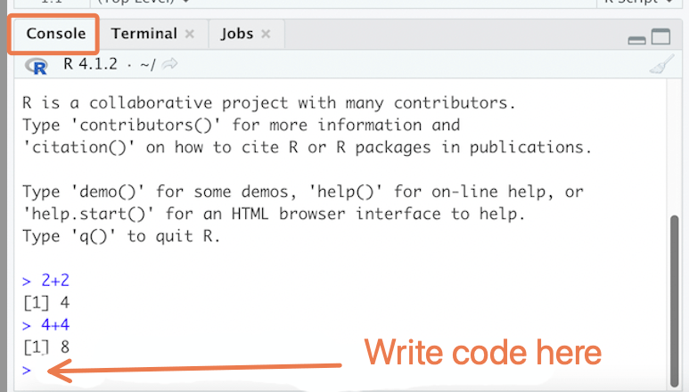

1 Setting up R and RStudio
Learning objective
- You can access R and RStudio, either through RStudio.cloud or by downloading and installing these software to your computer.
1.1 Introduction
To start you off on your R journey, we’ll need to set you up with the required software, R and RStudio. R is the programming language that you’ll use write code, while RStudio is an integrated development environment (IDE) that makes working with R easier.
1.2 Working locally vs. on the cloud
There are two main ways that you can access and work with R and RStudio: download them to your computer, or use a web server to access them on the cloud.
Using R and RStudio on the cloud is the less common option, but it may be the right choice if you are just getting started with programming, and you do not yet want to worry about installing software. You may also prefer the cloud option if your local computer is old, slow, or otherwise unfit for running R.
Below, we go through the setup process for RStudio Cloud, Rstudio on Windows and RStudio on macOS separately. Jump to the section that is relevant for you!
RStudio cloud will only give you 25 free project hours per month. After that, you will need to upgrade to a paid plan. If you think you’ll need more than 25 hours per month, you may want to avoid this option.
1.3 RStudio on the cloud
If you’ll be working on the cloud, follow the steps below:
Go to the website rstudio.cloud and follow the instructions to sign up for a free account. (We recommend signing up with Google if you have a Google account, so you don’t need to remember any new passwords).
Once you’re done, click on the “New Project” icon at the top right, and select “New RStudio Project”.

You should see a screen like this:

This is RStudio, your new home for a long time to come!
At the top of the screen, rename the project from “Untitled Project” to something like “r_intro”.

You can start using R by typing code into the “console” pane on the left:

Try using R as a calculator here; type 2 + 2 and press Enter.
That’s it; you’re ready to roll. Whenever you want to reopen RStudio, navigate to rstudio.cloud,
Proceed to the “wrapping up” section of the lesson.
1.4 Set up on Windows
1.4.1 Download and install R
If you’re working on Windows, follow the steps below to download and install R:
Go to cran.rstudio.com to access the R installation page. Then click the download link for Windows:

Choose the “base” sub-directory.

Then click on the download link at the top of the page to download the latest version of R:

Note that the screenshot above may not show the latest version.
After the download is finished, click on the downloaded file, then follow the instructions on the installation pop-up window. During installation, you should not have to change any of the defaults; just keep clicking “Next” until the installation is done.
Well done! You should now have R on your computer. But you likely won’t ever need to interact with R directly. Instead you’ll use the RStudio IDE to work with R. Follow the instructions in the next section to get RStudio.
1.4.2 Download, install & run RStudio
To download RStudio, go to rstudio.com/products/rstudio/download/#download and download the Windows version.

After the download is finished, click on the downloaded file and follow the installation instructions.
Once installed, RStudio can be opened like any application on your computer: press the Windows key to bring up the Start menu, and search for “rstudio”. Click to to open the app:

You should see a window like this:

This is RStudio, your new home for a long time to come!
You can start using R by typing code into the “console” pane on the left:

Try using R as a calculator here; type 2 + 2 and press Enter.
That’s it; you’re ready to roll. Proceed to the “wrapping up” section of the lesson.
1.5 Set up on macOS
1.5.1 Download and install R
If you’re working on macOS, follow the steps below to download and install R:
Go to cran.rstudio.com to access the R installation page. Then click the link for macOS:

Download and install the relevant R version for your Mac. For most people, the first option under “Latest release” will be the one to get.

After the download is finished, click on the downloaded file, then follow the instructions on the installation pop-up window.
Well done! You should now have R on your computer. But you likely won’t ever need to interact with R directly. Instead you’ll use the RStudio IDE to work with R. Follow the instructions in the next section to get RStudio.
1.5.2 Download, install & run RStudio
To download RStudio, go to rstudio.com/products/rstudio/download/#download and download the version for macOS.

After the download is finished, click on the downloaded file and follow the installation instructions.
Once installed, RStudio can be opened like any application on your computer: Press Command + Space to open Spotlight, then search for “rstudio”. Click to open the app.

You should see a window like this:

This is RStudio, your new home for a long time to come!
You can start using R by typing code into the “console” pane on the left:

Try using R as a calculator here; type 2 + 2 and press Enter.
1.6 Wrap up
You should now have access to R and RStudio, so you’re all set to begin the journey of learning to use these immensely powerful tools. See you in the next session!
References
Some material in this lesson was adapted from the following sources:
- Nordmann, Emily, and Heather Cleland-Woods. Chapter 2 Programming Basics | Data Skills. psyteachr.github.io, https://psyteachr.github.io/data-skills-v1/programming-basics.html Accessed 23 Feb. 2022.
This work is licensed under the Creative Commons Attribution Share Alike license.